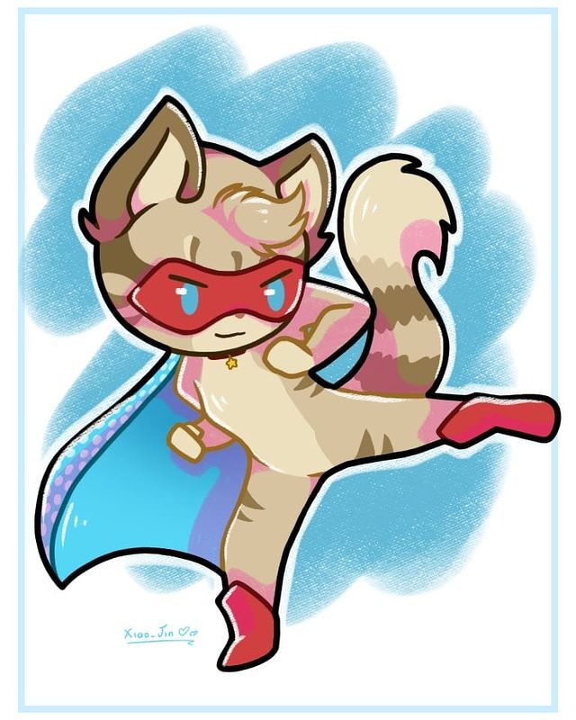
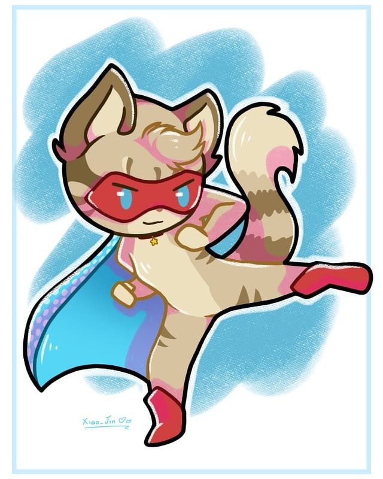

.gif)
| Gender | Female |
| Rarity | Common |
| Role | Bard |
| Skill #1 | |
| Skill #2 | |
| Trait | |
| Added in version | 1.0 |
Leonard loves Dog-pop more than he likes to admit.


Sprites used for Leonard in story quest cutscenes.
Trait - Good Friend +10% Great Success Chance on Quests with more than one Hero
Rarity - Ordinary
| Rank | Lights | Gold |
| 1 |  1 1 |
|
| 2 | 2 |
|
| 3 | 3 |
|
| 4 | 4 |
Dragoncaller has magical singing abilities that alter the environment, such as moving flood water, reinvigorating allies, and summoning dragons as his name implies.
- Leonard is probably a reference to Leonardo da Vinci, a famous Italian Renaissance genius who was, among many other things, a talented musician, something he is often less well known for.
- Leonard's hat is typical of the time period, however, the musical instruments he holds are not ones da Vinci played or invented.
- His line, "I am a bard!", refers to the fact that da Vinci was, at a time, a professional musician employed by patrons to provide entertainment; the term comes from medieval Gaelic and British culture.
- He might also be a reference to the famous musical composer and author Leonard Bernstein, whose notable works include West Side Story.
- He might also be a reference, or co-reference, to the popular musician, singer and songwriter Leonard Cohen.
- It has been confirmed by Robin, PocApp Studios' story writer, that Dog-pop is the Catanian equivalent of K-Pop.
- Leonard's secret alter ego is a superhero known as Dragoncaller, first revealed in the Call of Heroes 2018 Quest.
- In the story, he works with Justicecat to rescue Conan, who was transformed into a villain by Metal Claw.
- "Do Re Mi Fa So La Ti..."
- "Did someone say mewsical?"
- "La La La"
- "I am a bard!"
- "Turning it up to 11!"
- "You ruined my solo!"
 
